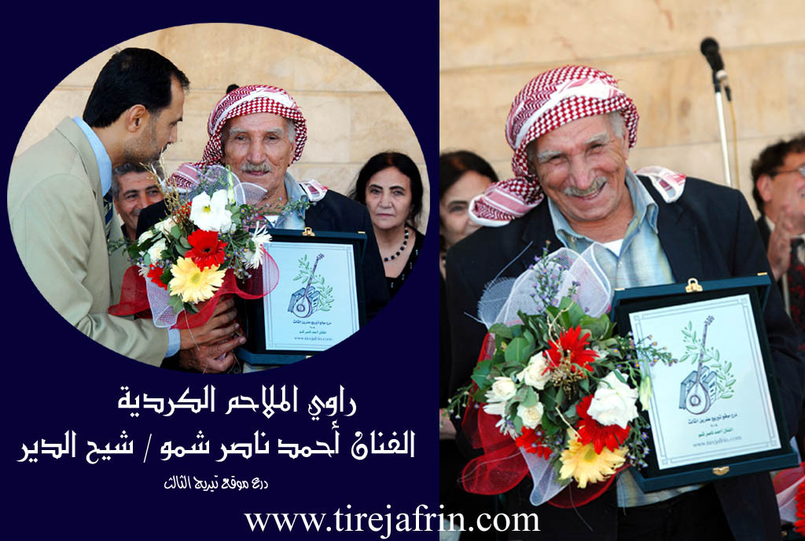

General Information
Nahiya (Subdistrict)
Efrîn
Also Known As
Sheikh al-Deir, Şadêrê, شيح الدير, شيخ الدير, شودريه
Tribes
Berazî, Tahten
Families, Clans, etc.
Ebdî, Eydîn, Ezdîn, Male Cume Şeref, Omerkê, Opgê, Pêgênd, Seydî, Ûsî Besê, Ûsî Hebîbe, Ûsî Hesen, Şemo, Şemê, Şereflera

Photos



Basic Information about Şadêrê
Source: Tirej Afrin
Etymology: The name is composed of two syllables: 'Şa' or 'Şah' in Kurdish meaning 'king', and 'dêr', meaning 'monastery', making the full meaning 'King's Monastery' (Dêra Şah).
Foundation Date/Period: approximately 400 years
Hills: Çiyayê Seman, Şêx Berekat
Shrines: Şêx Rikab
Other Landmarks: Geliyê Şêx Rikab, Geliyê Şêx Riqaq
Summaries
I. Summary from TirejAfrin Site (English) of Şadêrê
Source: https://www.tirejafrin.com/site/kura%20afrin%20markaz-%20shadere.htm
The following is stated in the book جبل الكرد (عفرين) دراسة جغرافية Çiyayê Kurmênc (Efrîn): Lêkolînek Cografî by د. محمد عبدو علي Dr. Mihemed Ebdo Elî regarding Şadr, Şîh el-Dêr, Şêx el-Dêr (1305 inhabitants, 335 houses, 19 km distance, 215 m altitude):
The name is composed of two syllables: "Şa" or "Şah" in Kurdish meaning "king," and "dêr" meaning "monastery," so the full meaning becomes "King's Monastery." Some say the name is Syriac from "Şîh el-Dêr," and during Arabization, the Syriac "Şîh" was replaced by the Arabic "Şêx." However, Khoury Barsoum states that "Şîh" in Aramaic means a fragrant plant. This difference in meaning between Aramaic and Syriac makes the Kurdish designation more probable.
The village has a beautiful location situated on a limestone rocky height. It is bordered to the east by the valley of Geliyê Şêx Rikab. Its residences are currently adjacent to the village of Xezawiyê. There is a small spring south of the village. Approximately half of the village residents are Êzîdî, and it contains the old cemetery for the Yezidis of the neighboring villages. In its center stands the old shrine of Şêx Rikab, and the site contains old and important archaeological signs.
The following is stated in the book عفرين .... نهرها وروابيها الخضراء Efrîn... Rûbar û Girên Wê Yên Kesk by the writer عبدالرحمن محمد Ebdulrehman Mihemed from the village of Qetme:
Şêx el-Dêr is a village in the Efrîn valley, belonging to the Central Villages subdistrict of the Efrîn region, Aleppo governorate. It is a village situated on the northern slope of a rocky height at its contact point with the flood plain of the Efrîn river valley. It is bordered to the north by a wide, agriculturally fertile plain, the Efrîn river valley, and the village of Keferzît. To the south, it is bordered by the rugged mountain chain of Çiyayê Seman and Şêx Berekat. To the west, it is bordered by a mountainous height, a fertile plain, and the village of Îska. To the east, it is bordered by the valley of Geliyê Şêx Riqaq and the town of Xezawiyê at a distance of 500 meters.
The number of its houses is approximately 150, and its age is about 400 years, indicated by its ancient location and the presence of old antiquities and a shrine on the eastern side. Its houses are built of stone with mud and wood, while modern ones are of stone and reinforced concrete situated on both sides of the Riya Xezawiyê-Celme (Xezawiyê and Celme road). An electricity network is available, as well as drinking water from the well and the small spring in the middle of the villages. There is also a mosque, a primary school, and a telephone.
It connects to Efrîn via a paved road that passes through the center of the village to the neighboring villages. The residents work in the cultivation of grains, olives, pomegranates, walnuts, apples, and vegetables irrigated from wells and the Efrîn river, as well as raising sheep. A portion of the inhabitants work in limestone quarries south of the village. The village is surrounded by pomegranate and walnut trees.
Among the holders of higher degrees in the village is Mamed Cumo (PhD in Oriental Languages, Kurdish, from France).
Village Mukhtar: Ebdulrehman Şeref
Preparation and execution:
Manager of Tirej Afrin website: Ebdulrehman Hacî Osman
Sources:
- Book: جبل الكرد (عفرين) دراسة جغرافية Çiyayê Kurmênc (Efrîn): Lêkolînek Cografî by د. محمد عبدو علي Dr. Mihemed Ebdo Elî.
- Book: عفرين .... نهرها وروابيها الخضراء Efrîn... Rûbar û Girên Wê Yên Kesk by عبدالرحمن محمد Ebdulrehman Mihemed from the village of Qetme.
- 20/12/2013
II. Summary of Şadêrê from Ax û Welat
Source: https://www.youtube.com/watch?v=IvjAKVDHJTE
The village of Şadêrê is located in the Efrîn region, situated strategically between the mountain of Çiyayê Lêlûnê and the fertile plain of Deşta Cûmê, near the ancient ruins of Kelha Semanê. The name Şadêrê is derived from Şahê Dêrê, which translates to King of the Church. The settlement has deep historical roots. Originally established as a temple during the Hurriyan period, it was later converted into a church during the Romaniyan era. Ancient remnants, including the church site known as Kenîse, old olive presses, and khans for merchants traveling to Heleb, are still visible throughout the area today.
The modern village was founded 750 to 800 years ago by an Êzîdî ancestor named Şeref. He had three sons named Eliyê Şeref, Mîrzayê Şeref, and Cimê Şeref. Today, the entire village is comprised of one large family lineage known as the Şereflera. Initially, all residents practiced the Êzîdî faith. However, about 80 years ago, due to commercial and cultural interactions with Arab populations from the Sêrê plain who were referred to locally as Tahten, a portion of the village converted to Misilman to facilitate trade and social relations. Other lineages, such as Male Cume Şeref, retained their Êzîdî faith. Despite this religious division, the Misilman and Êzîdî relatives live together in strong familial harmony, maintaining their unified identity.
The village has a proud history of autonomy and resistance. During the Osmaniyan period, a local leader named Xan Mîrze famously rejected a gift from the Ottoman Sultan, viewing the offering as a symbol of espionage and subjugation, a choice that cemented his legacy among his people. Oral tradition remains alive here, as elder residents recall old folktales and songs about historical figures like Cebel and Celîl, learning from past traveling singers such as Ebû Zekî and Dilsafo of the Berazî tribe.
Agriculture heavily shapes the village economy. Decades ago, Ermenî engineers introduced a water project connecting the Efrîn river to Şadêrê, Xezawiyê, and Bircê, allowing locals to cultivate rice and cotton. Later, villagers dug their own wells and shifted to orchards. Today, pomegranates make up 75 percent of the harvest, alongside apples and peaches, while olives are rare due to the salty soil. Arab workers, displaced from Cebel el His, now live alongside the Kurdish residents and assist with the fruit harvests.
Sacred sites hold great importance in the community. At the foot of Çiyayê Lêlûnê lies a shrine known as Şêx Riqab or Mar û Dêrûki. This revered cemetery serves seven surrounding villages, including Hemamê, Qefêr Zît, and Şêrê. Misilman residents visit the shrine on Fridays, while Êzîdî residents visit on Wednesdays, both seeking healing and fulfilled wishes. Women tie green cloths to the walls and apply the shrine earth to cure ailments. The village also features a 700 year old spring with descending stone stairs and a well known as bîra Eynab, alongside a subterranean water channel that reaches near the local mosque.
II. Summary of Şadêrê from Afrin 366
Source: https://www.youtube.com/watch?v=szUzE-ckRtM
The documentary provides an in depth exploration of the historic village of
Şadêrê in the Efrîn region. According to the village elder Ebu Îsmaîl,
the settlement is incredibly ancient, boasting a history that stretches back
approximately 1300 years. The village was originally founded by a man named
Şero, and the modern population largely descends from his lineage. The social
structure is built upon these generational ties. Ebu Îsmaîl explains that the
descendants of Şero divided into various family branches. One primary group
consists of the Şemê, Ezdîn, Seydî, Ûsî Hesen, and Ûsî Besê families.
Another branch includes the Eydîn, Omerkê, and Ebdî families, who are
closely related to the Ûsî Hebîbe family. Other notable households in the
village include the Şemo, Pêgênd, and Opgê families. The documentary
itself was filmed at the request of Elî Nasir, a member of the Şemo family,
alongside his relative Îsam.
The landscape around Şadêrê is defined by its abundant water sources and
ancient landmarks. The villagers rely on historical wells such as Bîrê Anabo
and the stepped stone well known as Bîrê Qenaba, which collect rainwater and
have served the community for generations. The village is also famous for its
main spring, Kaniya Şadêrê, a deep, clear water source containing large fish,
which flows steadily even during dry summers. Another spring mentioned by the
locals is Şoroyê. The natural environment is shaded by significant tree
groves, including Darên Îskoyê and the Darên Siriyê located on the hill
called Girê Ereb. A sacred site of great importance is Şikefta Ziyaretê, a
cave shrine that holds spiritual significance for the local residents.
Additional nearby locations include the area of Keperzît and the settlement of
Qeryet Besme. The host and residents note that the local roads connect
Şadêrê to surrounding hubs like Cindarêsê and Atme.
Throughout the documentary, the residents reflect on the passage of time and the
transformation of village life. An elderly woman recalls the hardships of the
past, describing how women used to bake bread over open fires and wash their
clothes by the spring, a stark contrast to modern conveniences and the pervasive
use of mobile phones today. Despite the challenges, the villagers express a deep
connection to their land. Local men discuss the economic potential of Efrîn,
actively encouraging the diaspora living in Libnan and Ewrûpa to invest in
their homeland. They suggest opening local businesses such as bakeries, dairy
farms, or cold storage facilities for fruit, rather than simply buying empty
properties. The community takes immense pride in their lush, unpolluted
environment, the historic ruins embedded in their fields, and the enduring
agricultural traditions that keep Şadêrê vibrant and self sustaining.
Transcriptions and Subtitles
| Source | Video | Subtitles | Transcript |
|---|---|---|---|
| Afrin 366 1 | Watch Video | Download SRT | View Transcript |
| Ax û Welat 1 | Watch Video | Download SRT | View Transcript |
Possible Village Name Meaning of Şadêrê
The name is composed of two parts: Şa or Şah in Kurdish means "king", and "dêr", with the complete meaning "monastery of the king". Some say the name is Syriac from "şîḥ al-dayr", where "şîḥ" is a sweet-smelling plant.
Source: TirejAfrin Site
V. Links
- Tirej Afrin:
https://www.tirejafrin.com/site/kura%20afrin%20markaz-%20shadere.htm - Ax û Welat:
https://www.youtube.com/watch?v=IvjAKVDHJTE - Local FB page:
https://www.facebook.com/profile.php?id=100063697286863 - Video:
https://www.youtube.com/watch?v=si0eE9azvsE - Afrin 366:
https://www.youtube.com/watch?v=szUzE-ckRtM